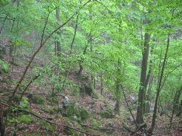
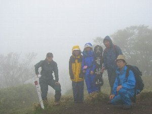

青笹山ハイク | ２００４年５月 |
|---|---|
| メンバー：ベッシー・シュガー・みっちー・かむい・のび太 青笹山とは静岡市北部の安倍川筋で、ワサビ発祥の地、有東木近辺の山である。 の 朝からドシャ降り交じりの雨だが、予定とおりハイキングを決行。 県庁へ集合時間定刻の８時半にのび太号で着くと、駅方向から登山スタイルの女性が歩いてきたので、「あっ、かむいさんだ」と分かった。 １０時に葵高原からハイキング開始。100円カッパ１名・カッパズボン無し１名で「大丈夫〜？」と首を傾げながら。 ワサビ田の脇を通って、新道へ。整備が行き届いた、渓流の雰囲気満点の新緑の中を歩く。皆バテ気味だったので、途中からペースダウン。杉林・ガレ場などを通って稜線に到着。「コチラの方向に富士山があるんだよ」の解説にも、全く説得力無し。 | |

ハイキング看板です。クリックしてみてください。 |  こんな所を登ります |
| べ 初めのペースはバテはしなかったが、暑かった。ゴアのカッパでも汗発散が追いつかず、中が汗だく。とまで行かないまでも、暑い！カッパ脱ぎたい位に。 しかし、雨でしっとりとしている森の中は、新緑の緑が美しい。そこに、もやが軽く掛かっているため、幻想的な風景です。これは雨ならではだね。稜線を歩いている時は、雲が多く視界が悪くなってしまって残念。写真ももっと沢山撮りたかったけど、カメラが雨に濡れることを気にして、出しては拭いて、出しては拭いてでした。 青笹山頂までのび太予定では２時間３０分の所を、２時間の１２時着。こんなペースで登れれば、結構良いんじゃないかな。山頂は全くの雲の中と言う感じで、３６０°の展望はかないませんでした。ただ、木が少なく、名前の通り低い笹が一面なので、晴れたら本当に展望が良さそうです。 の 山頂で木陰で休憩するも、雨ビシャビシャのため、昼食して程なく退散。ここからの稜線、ホントに楽しいコースなのに〜！ べ木陰といっても、単なる木の下。全く雨よけにはならず、そんなにヒドイ降りでは無かったものの、ゆっくり出来るわけもなく、お昼食べたら出発。天気良ければ（また「たら、れば」使っちゃたよ）シートでも広げてピクニック気分が味わえるね。 稜線もそうだけど、ここって植林が少ない山なんだね。自然のままの木が沢山有り（山なんだから当たり前なんだが）そんな所が嬉しかった。大きく曲がりくねった木とか。 | |
|  薄いもやと、新緑が気持ちいいです |  青笹山頂で記念写真 |
| の 細島峠で小休憩してからのルートが大変。大小のジャリ道で、のび太が落石こそしなかったが２回も尻餅するし、膝はガクガクしはじめたり。 べ 帰りのルートは何が大変かって、落石です。大小様々な石が積み重なっている所があり、前の人の所に石を転がしそうで恐い。雨で滑るしね。 ワサビ田まで降りてきたらほっとしました。 （感想） の ストックを使いこなせば、そんなに大変なコースで無いし、今回歩かなかった地蔵峠〜葵高原のコースはウォークラリー気分が楽しめるコースで、またリベンジ企画してみたい。晴天なら、ワサビ田や山頂・峠など、じっくり草木を観察するのも楽しいコースです。 べ そうですね、自然を観察するって所が良いね。花や鳥の声なんか。ゆっくり時間を掛けて登り、周りを観察しながら行くハイキングってのも、やりたいね。 １００円カッパ着て、既に破れた人が居るが、カッパってアウトドアに必需品だから、ちゃんとしたのが欲しいね。無理しない程度に一つずつそろえていこう。新しいカッパ買うと、雨の日に出かけたくなるよ！ | |
 細島峠 |  細島峠からの降り道 |
| のび太から参加者に、晴天時の山頂からみた雪化粧の富士山が送られてきましたが、リベンジの意味も込めて掲載はいたしません。是非この目で見ましょう！ 写真 ｂｙ べっしー、 コメント ｂｙ のび太＆べっしー | |